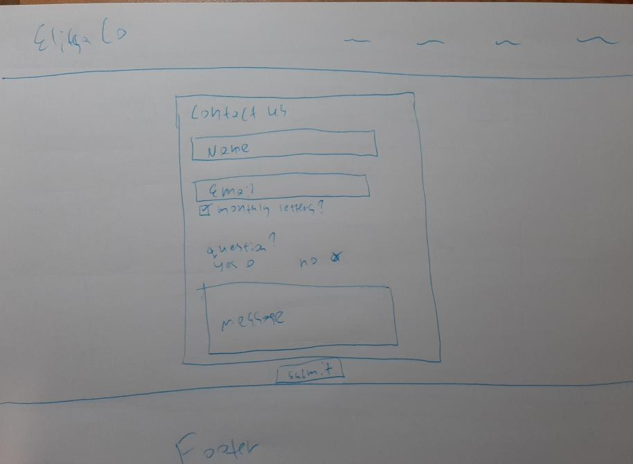
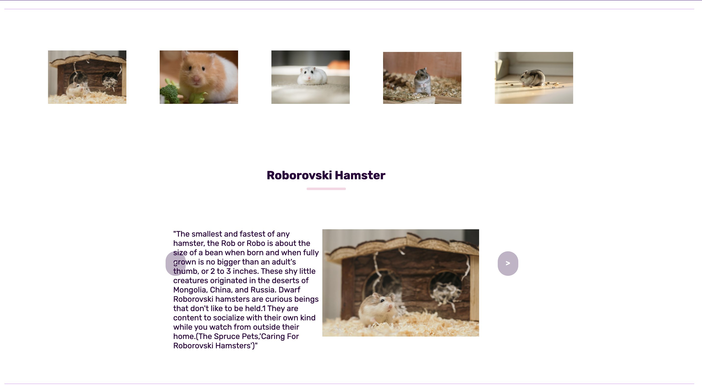

Problem Description (%10)
Hamster Care 101 is a website that provides users with a comprehensive
information that will
help
them learn more about hamsters, decide whether or not they should get a hamster and all the cost
and
care involved.
There is basic info on each hamster breed, a blog page with blog posts that
provide
information on different hamster topics, a hamster care page with videos and information about a
hamsters basic needs
and a cost calculator to help users decide whether they can afford a
hamster
Ø Describe the archetypical users of the site.
The archetypical users of the site are people above 12 who are interested and caring for
hamsters as pets and need more information.
Ø What problem does the site solve?
Hamsters tend to be under cared for and even abused because they are sold for cheap.
My website provides easy to access info on hamsters and will hopefully encourage hamster owners to
care better for their pets.
Research (10%)
Ø Evaluate the site layout and site content.
Ø You must look at 3 websites as part of your research.
The first website I researched was Hamster Guru (https://hamsterguru.com/blog/)
The way the blog posts are layed out is very similar to mine and is an exact representation of
the
layout I was going for for the blog page.
It provies similar information to my website however it's diffucult to navigate and it is not visually
appealing
The second website I researched is called Erin Animals and it was made with wix.com
(https://erinshamsters.wixsite.com/hamsters). The website has a lot of useful information on hamsters,
however it's unresponsive and looks outdated.
The third website I researched is called Hamster Society Singapore
(https://www.hamstersociety.sg/hamstercareblog). I really like the layout of it, it looks really clean,
but it was made using squrespace which is a bit lazy.
Technology Selection and Site Architecture (20%)
Version of HTML/CSS to be used - HTML5 and CSS3
Ø Plan for site layout and responsive design.
My plan for the site layout is using a lot of div elemets called col for collum and row for a row to
structure it.
I will first write up all the html and the css then add JavaScript.
I will be testing the website as I make it to make sure it looks good on phone, tablets and desktops
and
I will be styling certain elements with media queries to make sure its responsive.
The site will contain 5 main pages, a home page, hamster breeds page, hamster care page, a blog page
and a report page.
Additional 3 blog post pages will be added as well as a seperate contact page.
The 5 main pages will be laid out in the top navigation bar, or the drop down menu on smaller
devices ,
and the additional pages will be able to be accessed from either the blog for the blog post pages or
the footer for the contact page.
Ø How do we expect users to view the site (Phone/tablet/PC etc...)?
The users are mainly expected to view this website on a PC or a phone however the website is also
repsponsive on tablets.
Ø Cross Browser Compatibility strategy?
I will run the website on 3 different browsers, chrome,
safari and firefox to check for compatibility. I will be checking all the pages on each browser and
see if its responsive
Chrome
The website was developed and tested mainly with chrome so it all works as expected.
Safari

The website looks exactly the same on Safari as it does on Chrome, one small difference it how the drop-down selection looks on the blog posts page but it is not a major aesthetic disaster.
FireFox

The website looks really good on firefox , no problems or major differences
JavaScript Functionality (10%)
I have used JavaScript in a few different ways to make my website functional.
- I made a base carousel using JavaScript which then I used for the breeds page to show
all 5 hamster breeds on a different slide, you can also click on the
images of the breeds to move the slide position to the selected breed.
I also used the carousel for the hamster care page to show videos to related topics.
A carousel can also be found on the home page to show the most recent posts. -
I used JavaScript in the Hamster Care page for the calculator.
It gets input from the user and calculates how much would hamster csre cost for that person. -
I used JavaScript in the contact form so it shows error messages when
the user doesn't enter their name/enters an invalid email/don't enter a message
and it clears the messages once the user fullfiles the requirement.
Upon successful completion a pop up Success window shows. -
I used JavaScript for the toggle menu.
When the website is viewed on smaller devices a menu icon appers and when you click it there is a drop down menu.
Low Fidelity Prototype (10%)

The layout of the website will be as shown, there will be a navigation menu with the website logo and the main pages, home, breeds, hamster care and report page. Each page will have the same navigation menu and footer. The blog posts will be shown in the blog page as boxes of equal width and lenght with some space in between. Details like a picture, date, title and description of each blog post will be shown on screen, as shown in the drawing. The hamster breeds page will have information on each hamster breed in a carousel format, with pictures to select the breed and slider buttons to move to the next or previous breed.
-
Visibility of system status
On the contact form the user is told exactly what they need to fill in, with appropriate error or success messages being shown to them.
-
Match between system and the real world
All the language on the website is simle to understand and appropriate for the target audiance. No complicated or technical language was used and all info is presented
in a clear and logical manner. -
User control and freedom
The user is well informed of where they are on the page.
All links are titled, as well as all pages so the user can see exactly where they are. The menu is shown on every page so the user can click trough pages easily, for the carousel there are next and previous buttons added. -
Consistency and standards
My website is following the common website standards, every function of the website is made to be similar to other websites so the user would immediately know how to use them. -
Error prevention
One potential error is the youtube iframes not working due to the videos getting deleted or taken down. This can be solved by using original videos that are saved in the aseets folder instead of iframes. -
Recognition rather than recall
All information the user needs on on screen for any page of the website. -
Flexibility and efficiency of use
Both experienced and non- experienced users can use the site as the layout is very simple and common. -
Aesthetic and minimalist design
The website has only the minimum information required on screen. -
Help users recognize, diagnose, and recover from errors
Any issues or problems that occur when using the site are presented in a clear manner and the user can easily understand and offer a clear solution on how to solve the problem. -
Help and documentation
-To access different pages, click the link in the menu.
-To use the calculator, enter the amount of the hamster cost in the specified area, then when you are all done, click the submit button and see the total to get your total.
Development Plan (10%)
All the pages will have the same navigation bar and footer, therefore they will share the same css
for that.
All the titles and texts on all the pages are styled the same.
The carousel share the same css styling, except for the hamster breeds carousel which has some extra
styles.
A similar color pallete is used troughout the website for consistancy.
Testing Plan (10%)
I checked every html page using the The Nu Html Checker (https://validator.w3.org/nu/) for my HTMl
validation. I checked every page and corrected every warning and error so my website is valid.
I used the W3C CSS validator (https://jigsaw.w3.org/css-validator/) to validate my CSS file and
corrected any errors.
Ø Is the site Responsive? Test screenshots from Chrome Developer must be included in this section.
Yes the site is responsive, here are some screenshots that show all the website pages being
responsive.
On Desktop

On phone
On Tablet


Site Evaluation (10%)
-
Visibility of system status
On the contact form the user is told exactly what they need to fill in, with appropriate error or success messages being shown to them.
-
Match between system and the real world
All the language on the website is simle to understand and appropriate for the target audiance. No complicated or technical language was used and all info is presented
in a clear and logical manner. -
User control and freedom
The user is well informed of where they are on the page.
All links are titled, as well as all pages so the user can see exactly where they are. The menu is shown on every page so the user can click trough pages easily, for the carousel there are next and previous buttons added. -
Consistency and standards
My website is following the common website standards, every function of the website is made to be similar to other websites so the user would immediately know how to use them. -
Error prevention
One potential error is the youtube iframes not working due to the videos getting deleted or taken down. This can be solved by using original videos that are saved in the aseets folder instead of iframes. -
Recognition rather than recall
All information the user needs on on screen for any page of the website. -
Flexibility and efficiency of use
Both experienced and non- experienced users can use the site as the layout is very simple and common. -
Aesthetic and minimalist design
The website has only the minimum information required on screen. -
Help users recognize, diagnose, and recover from errors
Any issues or problems that occur when using the site are presented in a clear manner and the user can easily understand and offer a clear solution on how to solve the problem. -
Help and documentation
-To access different pages, click the link in the menu.
-To use the calculator, enter the amount of the hamster cost in the specified area, then when you are all done, click the submit button and see the total to get your total.
Weekly Logs (10%)
Week 1
Week 2
Week 3
Week 4
Week 5
Resources
https://www.youtube.com/watch?v=QT1ya4Ut40o&t=671s
https://www.youtube.com/watch?v=gor5BvT2z88&t=1517s
https://www.youtube.com/watch?v=yQimoqo0-7g
Web Development 1 CMPU1031: 2021-22 course